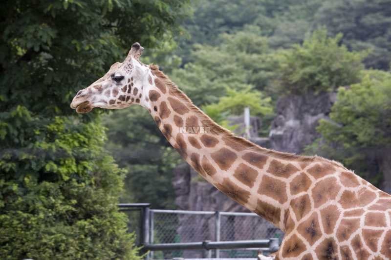

About

common
기린은 약 300-500만년 전 유럽과 아시아에 서식하던 큰 영양과 비슷한 3m 정도 크기의 포유류에서부터 진화했다.[1] 최초의 기린은 신생대(新生代) 제3기 중의 한 시대인 초기 중신세(中新世, Miocene)에 나타난 Climacoceras이다. 외양은 사슴과 비슷하고, 머리에 사슴뿔과 비슷한 인각(麟角, Ossicone)이 있다. Climacoceras 이후로, 중기 중신세에는 Palaeotragus와 Samotherium가 나타났다. Palaeotragus는 머리에 기린과 매우 흡사한 인각(麟角)이 있다. 어깨부위까지는 키가 크지만, 여전히 현대의 기린보다는 목이 짧다. 기린과는 선신세(鮮新世, pliocene)에 나타났고, 오카피과는 홍적세(洪積世, Pleistocene)에 나타났다. 현대의 목이 긴 기린인 Giraffa camelopardalis는 1백만년 전에 처음으로 나타났다.
[편집]분류 현재 9종의 아종(亞種)이 인정되고 있으며, 색깔, 무늬, 그리고 서식지를 기준으로 분류한다.
그물무늬기린(G.c. reticulata) - 밝은 흰색의 테두리로 둘러싸인 적갈색의 다각형 모양 큰 반점. 짙은 붉은색인 경우도 있으며 간혹 다리까지 덮는 경우가 있다.
서식지: 케냐, 에티오피아, 소말리아 동북부.
나이지리아기린(G.c. peralta) - 매우 많은 양의 희미한, 황적색 반점.
서식지: 나이지리아, 카메룬.
남아공기린(G.c. giraffa)
- 밝은 황갈색 바탕에 둥글거나 얼룩진 반점. 간혹 별모양으로 뻗은 반점. 배쪽까지 위치한다.
서식지: 남아공, 나미비아, 보츠와나, 짐바브웨, 모잠비크.
누비아기린(G.c. camelopardalis)
- 회백색 바탕에 밤색 사각 반점. 다리 안쪽에는 반점이 없다.
서식지: 수단 동부, 콩고공화국 동북부.
로스차일드기린(G.c. rothschildi)- 크림색 테두리가 있는 짙은 갈색 또는 얼룩덜룩한 직사각형 반점.
무릎에도 반점이 있는 경우가 있다. 서식지: 우간다, 케냐 중북부.
마사이기린(G.c. tippelskirchi)
- 노란 바탕에 어두운 쵸콜렛색 뾰족뾰족한 잎사귀모양의 반점.
서식지: 케냐 중부와 남부, 탄자니아.
앙골라기린(G.c. angolensis)
- 모서리가 V자로 파인 큰 반점. 간혹 다리 하부까지 연결된다.
서식지: 앙골라, 잠비아.
코르도판기린(G.c. antiquorum)
- 다리 안쪽을 더 작고 불규칙한 반점이 덮고 있다.
서식지: 수단 서부와 서남부
토니크로프트기린(G.c. thornicrofti)
- 별모양 또는 잎모양 반점이 다리 하부까지 위치한다.
서식지: 잠비아 동부.